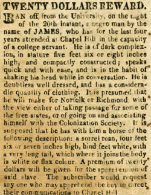
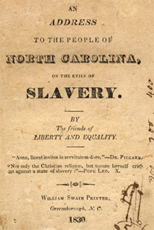

|
The origins of slavery in North Carolina were consciously commercial. The eight
Lords Proprietors who received the Carolina Charter from Charles II in 1663
hoped to accumulate huge profits from colonists who rented land, raised a wide
variety of commodities, and employed slave labor. Barbadians were among the
first colonists to invest in Carolina, and they persuaded the Lords Proprietors
to institute a headright system under which a certain amount of acreage was
apportioned to a colonist for each "Negro-Man or Slave" and "Woman-Negro or
Slave" brought to Carolina. Moreover, Carolina's Fundamental Constitutions,
drafted in 1669, reinforced the slave status of Africans.
Though Africans were being imported directly into North Carolina as early as
the 1680s, slavery, in comparison with South Carolina, expanded slowly. North
Carolina's treacherous coastline and poor harbor facilities forced slaveholders
to purchase Africans in Virginia or South Carolina and bring them via overland
or inland water routes. In 1710 there were 308 blacks reported living in
Pasquotank and Currituck counties on the Albemarle Sound, and two years later
the entire black population of North Carolina was estimated to be only 800. By
1730 that number had grown to perhaps 6,000. The most dramatic growth of the
black population occurred between 1755 and 1767 when the number more than
doubled, from approximately 19,000 to nearly 41,000, a yearly rate of increase
of over 6 percent. About 2.5 percent of the growth can be attributed to natural
increase, but over half of the population surge resulted from the importation of
slaves from Africa and the West Indies or the forcible immigration of slaves
from neighboring colonies. On the eve of the American Revolution slaves made up
about one-fourth of the colony's population.
By 1790 there were 100,572 slaves in North Carolina, composing approximately
25.5 percent of the total population. Twenty years later slaves composed 30.4
percent of North Carolina's population. From 1820 to 1860 the slave population
stabilized at between 32 and 33 percent of the aggregate population. In 1860
slaves numbered 331,059, almost precisely one-third of North Carolina's total
population.
Among whites, slaveholding families accounted for 31 percent of the
population in 1790; 26.8 percent in 1850; and 27.7 percent in 1860. By the 1850s
only 3 percent of North Carolina's slave owners could be considered planters
(twenty or more slaves), and only 2 percent owned more than fifty slaves.
Indeed, 70.8 percent of the Tar Heel slaveholders in 1860 owned fewer than ten
slaves.
The distribution of slaves in North Carolina followed agricultural patterns.
The lower Cape Fear region was settled in the 1720s by South Carolina planters
who brought slaves to cultivate rice and naval stores. Slavery also expanded
along a northern tier of counties bordering Virginia where the production of
tobacco played an increasingly important part in the eighteenth century. By 1860
slaveholding remained concentrated in the coastal plain and piedmont and was
tied closely to the commercial production of such crops as cotton, tobacco, and
rice and to industries (turpentine, lumber) associated with naval stores. Of the
sixteen counties that had more slaves than whites, eleven relied heavily on
cotton production. In the mountain counties slaves ranged from as few as 2
percent of the population to over one-fourth. In the southern Appalachians the
black population tended to swell during the summer months, when slaveholders and
their bondsmen moved up to the cooler mountain resort areas of North Carolina
from South Carolina and Georgia.
In 1795, fearing the spread of slave insurrections from the Caribbean, North
Carolina prohibited the importation of slaves from the West Indies. However,
state and, later, federal laws closing the foreign slave trade received lax
enforcement. In 1825 the North Carolina Manumission Society reported the
persistence of illegal smuggling in African flesh. The interstate slave trade
from the upper South to the lower South streamed through North Carolina during
the antebellum period. Apparently, North Carolina contributed its share to this
interregional migration. The decade of the 1830s was especially critical. Growth
of the slave population came to a virtual standstill between 1830 and 1840, and
the white population grew only 2.4 percent. According to one estimate, 84
percent of the approximately 835,000 slaves who participated in the migration
from upper to lower South, 1790-1860, accompanied their owners. Fully two-thirds
of that migration occurred after 1830.
|

Ad ad for a runaway North Carolina slave
|
The testimony of several former slaves in the 1930s suggested that Tar Heel
masters engaged in slave breeding. If so, the practice may have been less
pronounced in the mountains, where the sale of slaves was often kept within
white families, the community, and the region of the state. Between 1840 and
1860 North Carolina's slave population resumed its growth, increasing by 34.6
percent in absolute terms, or 1.47 percent annually. In the same two decades the
remainder of the population expanded at a rate of 30.3 percent, or 1.31 percent
annually. In the southern highlands, however, the growth rate of the slave
population was 62 percent in absolute terms--from 7,519 in 1840 to 12,182 in
1860--or 2.36 percent annually. Mountain masters clearly were expanding their
holdings, which made the sale of slaves outside the region or migration with
owners less prevalent.
The price of slaves at the time of the French and Indian War was
approximately £60 to £80, the amount the General Assembly compensated
slaveholders for each slave executed. (An estimated eighteen slaves were
castrated in lieu of execution in capital cases between 1758 and 1772.) During
the 1780s slaves brought between £120 and £180. In 1804 an African slave in
Charleston, bound for North Carolina, cost $300. By 1840 a prime field hand cost
about $800. In mountainous western North Carolina the average price of a slave
in 1860 was $835, but in other parts of the state slave artisans commanded as
much as $2,000; field hands, $1,500 to $1,700; and women, $1,300 to $1,500.
These figures were comparable to slave prices elsewhere in the South, which
fluctuated with labor demands, crop prices, and regional economic trends. For
example, a prime field hand in Virginia or South Carolina in 1810 cost around
$500. The average price for a field hand in the South in 1848 was approximately
$900; female slaves usually were $100 to $150 cheaper. The average price of a
slave reached $1,221 in 1859 as slave prices rose by 72 percent across the South
in the 1850s. In western North Carolina during the same decade, slave prices
rose even faster--108 percent.
The basic slave codes defining the social, economic, and physical place of
bondsmen were enacted in 1715 and 1741, with only slight modifications
thereafter. In 1753, for instance, a system of slave patrols was instituted.
During the eighteenth century special slave courts consisting of two magistrates
and four slave-owning freeholders tried slaves for criminal offenses. In 1793
the county courts assumed jurisdiction over slaves; in 1816 superior courts
began trying slaves as freemen except in the case of conspiracy. It was not
murder to kill a slave until 1791, and that law was ruled too vague by the state
supreme court in 1801. This defect in Tar Heel jurisprudence was not remedied by
the legislature until 1817. Particularly harsh restrictions were enacted in the
period 1830-1833 in the wake of abolitionist agitation and the Nat Turner
rebellion. By 1855 the slave code forbade slaves to engage in a variety of
activities: insolence to white persons; trespass against whites; intermarrying
or cohabiting with free blacks; running away; producing forged papers (passes,
certificates of freedom); hiring their own time; raising horses, cattle, hogs,
or sheep; selling spirits; gambling; hunting with a gun; setting fire to woods;
preaching at a prayer meeting where slaves of different masters were assembled;
and trafficking articles of property with slaves or whites except by written
permission. The code also forbade whites to teach a slave or free black to read
or write (math skills were excepted).
The living and working conditions of North Carolina slaves ranged from
execrable to tolerable. In a society where planters composed only 3 percent of
the population, those bondsmen owned by small farmers may have experienced
conditions not too different from those of their masters in terms of diet,
housing, and clothing. The "sawbuck equality" that characterized much of the
colonial South's race relations may have persisted well into nineteenth-century
North Carolina. However, a recent analysis of slave narratives in the 1930s
revealed that less than one-fourth of the slaves on small holdings ate the same
food as their masters. On larger plantations conditions also varied widely.
During the eighteenth century most observers portrayed slaves in North
Carolina as ill fed, ill housed, and ill clothed. According to a German traveler
in the 1780s, the largest planters kept blacks "the worst, let them run naked
mostly or in rags, and accustom them as much as possible to hunger, but exact of
them steady work." By the nineteenth century planters had refined the management
of slaves in accordance with custom, the demands of black laborers, and the
maximization of profits. Masters issued clothes twice a year, in the spring and
autumn. In the winter men wore shoes, a jacket, trousers, and a shirt; women
wore shoes, a chemise, petticoat, and dress. Men might also receive wool caps
and women head cloths. Summer clothes were scantier. "Negro cloth"--cotton for
summer, wool for winter--was often made on the plantation and dyed blue or
brown. Planters also occasionally purchased osnaburg and linen. In addition,
each slave received a blanket. Both white and black women spent much of their
time spinning, sewing, and weaving.
The rations for slaves consisted of meat, meal, molasses, and potatoes. In
1853 the Farmers' Journal (Raleigh) recommended giving men five pounds
of boneless pork and a peck of meal per week in the winter; women four pounds of
meat and a peck of meal. These rations were increased by one pound of meat and a
quart of molasses in the summer. In the winter of 1854-1855 one Brunswick County
planter who owned 150 slaves slaughtered 150 hogs and as many cattle as needed.
Slaves supplemented their diet by keeping their own gardens, hunting, and
fishing. Planters also offered incentives for slaves to earn money by producing
more than required. On the Pettigrew plantations in Washington County slaves
were permitted to trade various commodities at the plantation commissary, which
enabled them to buy needed items or a few luxuries. Pettigrew slaves, on their
own time, collected honey; made shingles, staves, and fence rails; cured
coonskins; and grew rice, corn, flax, and wheat. On other plantations masters
bought vegetables, butter, cheese, milk, eggs, and chickens from their slaves.
Some slaves even raised cattle or hogs, though the law forbade such practices.
Most slave housing was constructed poorly with inferior materials. One
Cumberland County slaveholder recommended that slave houses be replaced every
five to seven years to prevent the serious outbreak of disease. A visitor to the
rice-growing district of the lower Cape Fear in 1809 commented on the "rich
nabobs" who lived "amidst large villages of negroe huts." On rice plantations
slaves lived in double houses of wooden boards or shingles with a chimney in the
middle; two families occupied the double house. Most slave dwellings were built
from timber and stone found nearby. The slave huts in Halifax County were
described as "small, crowded, and smoky ... and very filthy." These dwellings
were "built of round pine or cypress logs." Log slave houses usually had stick
and dirt chimneys, one door, and one window that lacked glazing. There were
exceptions. The Pettigrew slaves lived in two-room houses. The Roanoke River
plantations of Henry and Thomas Burgwyn featured "good frame buildings" for
slaves, and the state's largest planter in 1860, Paul Cameron, erected solid
one- and two-story frame houses on his Stagville and Fairntosh plantations that
are still standing.
Though most slaves lived and worked in an agricultural setting, their labor
was not tied strictly to the production of crops. By the 1840s a task system had
become fairly standardized in the rice-growing district. Most work could be
accomplished by two or three o'clock in the afternoon. During the harvest
season, however, slaves often labored from dawn to dusk seven days a week. On
tobacco plantations slaves sometimes had to strip tobacco leaves at night after
working all day in the fields. Slaves usually worked in gangs under black
drivers. On the Pettigrew plantations slaves cleared new ground, rolled logs
into heaps, planted crops, hoed, harvested, threshed, and loaded crops on
vessels, cleared vines and underbrush, repaired ditches, built dikes, rived
staves and shingles, and cut down and sawed trees. Other slaves had more
specialized tasks such as coachman, house servant, cook, blacksmith, and
herdsman of cattle and hogs.
The hiring-out process assured that slaves could be busily employed at all
seasons of the year. Though slave artisans were not allowed to hire out their
own time, the practice was prevalent in such urban areas as Wilmington and New
Bern. Moreover, the skill of slave artisans was widely recognized by planters
who hired them to build stately mansions and by white workingmen such as the
Wilmington mechanics who rioted in 1857 to protest unfair competition from slave
labor.
In western North Carolina, where commercial crops were impractical,
slaveholders raised livestock and relied on slaves as herdsmen. Mountain slaves
also became involved in various mercantile, industrial, and manufacturing
enterprises, including hotel resorts, mining, railroad construction, public
works (constructing roads and courthouses), and the production of cloth and
hats.
Despite varied and disruptive work routines, the slave family proved
remarkably sturdy. In the eighteenth century the sex imbalance ratio between
male and female slaves on individual plantations was wide enough that in the
colony's eastern region as many as 39 percent of the slaves could not form
marriages on their plantations. The percentages ranged as high as 62 percent in
western counties. Slaves overcame this disparity by finding marriage partners on
other plantations, which extended the slave kinship pattern and therefore the
slave community far beyond the immediate plantation. Women tended to have their
first children before the age of nineteen. Naming patterns among slaves showed
strong family ties, with slaves named for fathers, grandfathers, aunts, and
uncles. Slave children grew up among siblings, even if they did not always share
the same father. On small farms it was to the master's benefit to allow slave
women to marry men on adjoining farms or plantations; any children that resulted
from such unions became the property of the master. Consequently, by the
mid-nineteenth century long slave marriages and naming patterns rooted in
kinship were not unusual. To be sure, slave marriages were not recognized by
law, but masters were sometimes reluctant to separate families. The precarious
condition of the slave family remained deeply etched in the memories of former
slaves who in the 1930s described in moving terms the breakup of families.
Slaves were especially vulnerable to changes in the planter family's life
cycle. Marriage, death, or migration posed the greatest threats to a slave
family's stability. Planters made presents of slaves to newly married children,
in wills and estate settlements divided slaveholdings among white family
members, and sold slaves to pay off debts or to dispose of troublesome property.
Moreover, older children and unmarried young adults were especially susceptible
to sale. Thus, any break in the planter family's routine usually brought
dramatic and unwelcome change for slave families.
Religion deeply affected slave life and slaves' perception of society.
Conversion of Africans to Christianity began slowly in the eighteenth century
partly because of the planters' resistance to it. Indeed, certain Islamic
practices and African folk rituals persisted well into the nineteenth century.
After the First Great Awakening in the 1740s, however, the Anglican baptism of
slaves accelerated. Presbyterians, Quakers, and Moravians also took an active
part in teaching Christianity to slaves in the eighteenth century. The Baptists
and Methodists, however, proved most successful in proselytizing Africans and
Creoles. Both denominations conducted services in a democratic atmosphere,
stressed fellowship, and addressed members, no matter what color, as "brother"
and "sister." In the 1780s the Methodists were openly abolitionist. Baptists
allowed black preachers to sermonize mixed congregations, and Henry Evans, a
free black shoemaker, organized the first Methodist church in Fayetteville in
the 1790s.
Baptists and Moravians showed especial concern for the plight of slave
families, with mixed success. In 1824 a Moravian minister who had married slaves
with the Book of Common Prayer had to suspend the practice. "It is not
within the power of Negroes to promise that they will live together as married
people," the Moravians noted, "for it often happens that one or the other is
sold by the owner... " Henceforth, the Moravians concluded, slave marriages
"shall simply be announced ... and the blessing of God shall be wished for
them." By 1830 most religious services in North Carolina were conducted on a
rigidly segregated basis, and churches that earlier had debated the morality of
slavery were now defending it with biblical justification.
Such segregated practices were not without advantages, however. By 1810
separate African churches had been established in Wilmington, New Bern,
Fayetteville, and Edenton. In the slave quarters black preachers rejected the
masters' institutionalized religion--with its emphasis on the theme "servants
obey your masters"--and expounded freedom, dignity, hope, and sometimes
rebellion. The 1802 slave insurrection scare had its inception and inspiration
at religious gatherings, where at least one black preacher reportedly carried a
gun.
|

Among Southern states, North Carolina had one of
the most developed anti-slavery movements.
|
Of all the religious denominations only the Society of Friends steadfastly
contested the morality of slavery. The Quakers declared slavery an evil in 1776
and urged Friends to give it up. Quakers fought hard to abolish slavery and to
loosen extremely restrictive manumission laws. Emancipation was permitted only
for "meritorious Services" to be judged by the courts. Quakers circumvented the
law by giving some slaves the "full Benefit of their labour" and assigning other
slaves to agents who delivered the liberated blacks to Haiti, Liberia, and the
free-soil North. By 1830 Quakers had sent 652 blacks out of North Carolina and
still had under their charge another 402.
North Carolina slaves engaged in various types of resistance to bondage
including running away, sabotage, stealing, feigning illness, malingering, and
poisoning. Fear of slave insurrections was evident as early as 1715. The first
instance of collective revolt may have occurred in the winter of 1752-1753. With
the coming of the American Revolution in 1775, Whigs feared a slave revolt in
Wilmington, but an actual uprising seems to have taken place in the coastal
plain counties of Beaufort, Pitt, and Craven. Slave unrest persisted throughout
the Revolutionary war and was especially acute when British forces were present
off the Cape Fear coast in 1776 and along Lord Cornwallis's line of march in
1781. In 1802 a full-scale slave insurrection scare gripped northeastern North
Carolina, where slaves, encouraged by the Gabriel Prosser revolt of 1800 in
Richmond and inflamed with a religious zeal ignited by the Second Great
Awakening, plotted a racial cataclysm. The last-minute discovery of a written
message being circulated among the conspirators interdicted the rising and
resulted in the execution of twenty-four slaves. Three years later a series of
poisonings in Wayne, Sampson, and Johnston counties ended with a slave woman
being burned at the stake and three other slaves being hanged. In 1821 a
contingent of 200 militiamen spent twenty-six days in the field subduing a band
of eighty runaways in Onslow County. Four years later Edgecombe County whites
suspected slave preachers of agitating blacks with rumors that the federal
government would free them in October and of plotting a Christmas eve rebellion.
The appearance of David Walker's Appeal in North Carolina in 1830 set off
a panic in several southeastern counties where slaves were said to be
uncontrollable. White hysteria, perhaps only matched in 1802, followed in the
wake of the Nat Turner rebellion in 1831 in neighboring Southampton County,
Virginia, but it was the last major slave scare in antebellum North Carolina.
The conditions of slavery changed dramatically with the outbreak of the Civil
War. The Confederate government used black labor to operate railroads, to dig
wells, to construct earth works and fortifications, and to perform fatigue duty
for the Southern army. Blacks were lent by masters, hired by the Confederacy, or
often simply impressed. Defection of slaves began as early as 1861-1862 when the
Union army invaded and occupied much of coastal North Carolina. The former
slaves soon performed the same chores for Union forces they had for the
Confederacy, with the significant new role as soldier. Slaves also acted the
part of spies and guides for Union operations in eastern North Carolina.
By war's end major encampments of freedmen on Roanoke Island and at James
City across the river from New Bern established a black presence that would lead
to greater political and economic power in postbellum society than anyone could
have envisioned at the outset of the war. In September 1865, 117 delegates
representing forty-two of North Carolina's counties convened in Raleigh for the
first freedmen's convention in the South. Scarcely one-fourth of them could read
and write. They urged freedmen to avoid cities and to strive for ownership of
land, for education. for amicable relations with whites, and for the
normalization of marriage. To the constitutional convention assembled across
town they appealed for the protection of the law to their persons and property,
for black education, for the regulation of hours of labor, and for the abolition
of all laws that discriminated "on account of race or color." Black
Reconstruction was under way.
That the nature of antebellum slavery shaped the post-emancipation experience
of blacks is a truism. Primarily an agricultural people, propertyless blacks
quickly became ensnared in the sharecropping and tenant system of the postbellum
economy. Sixteen counties in the piedmont and east continued to hold black
majorities before the turn of the twentieth century. Though many blacks migrated
to eastern towns such as Raleigh, New Bern, and Wilmington, they did not
participate to any large extent in the industrialization that spread principally
across the piedmont. Mill work remained for whites only.
The concentration of black population in certain eastern counties and cities,
however, enabled Tar Heel blacks to wield sizable political power before
disfranchisement in 1900. In places where blacks enjoyed numerical and political
strength, such as the lower Cape Fear region, the Ku Klux Klan failed to
exercise much influence during Reconstruction. Black voters, sometimes with the
assistance of white Republicans and Populists, elected numerous black
politicians to local offices, more than 100 to the legislature, and 4 to
Congress. A profile of black politicians who rose to power in the postbellum
decades might suggest that, whether former slaves or antebellum free blacks,
they shared similar characteristics. Black politicians were normally natives of
North Carolina; they were usually literate, despite antebellum prohibitions;
they ordinarily possessed a specialized skill or practiced a profession; and
they were overwhelmingly Republican.
The agenda blacks established for living in post-emancipation society
reflected precisely those rights and freedoms denied them under slavery:
normalization of marriage; equal political and civil rights; education; and the
right to own property, especially land. Ironically, after a promising start
under Reconstruction, blacks faced reversals in nearly every area by 1900 as the
age of segregation descended.
Source: Randall M. Miller and John David Smith, eds. Dictionary of
Afro-American Slavery (Westport, CT: Praeger, 1997), 537-44.
|